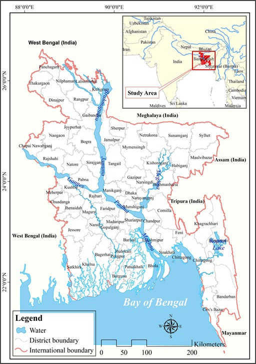
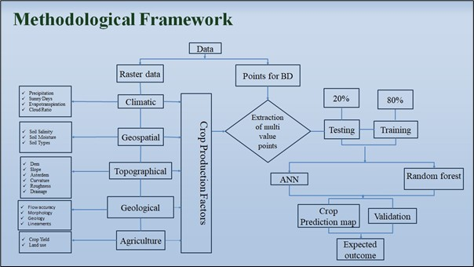
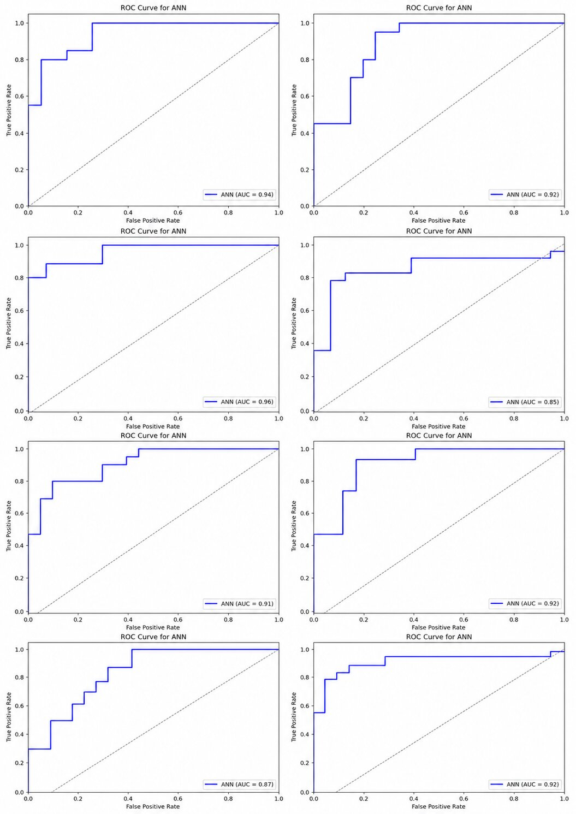
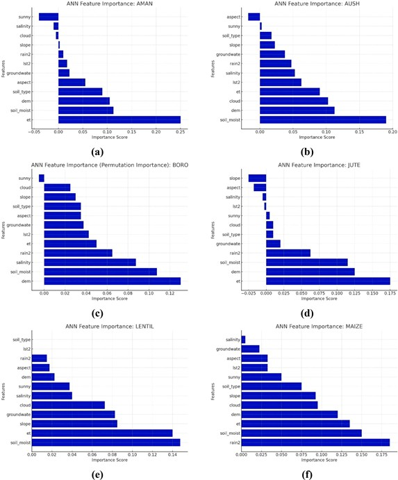
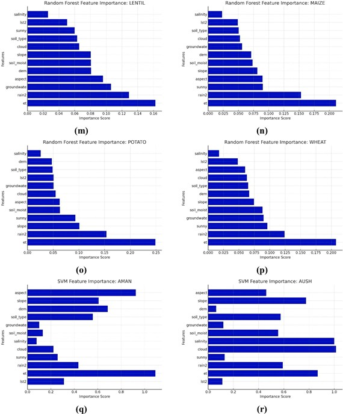
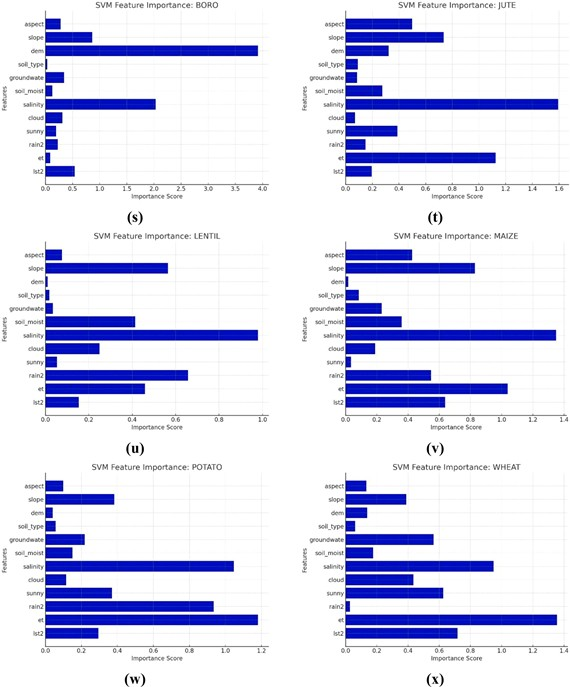
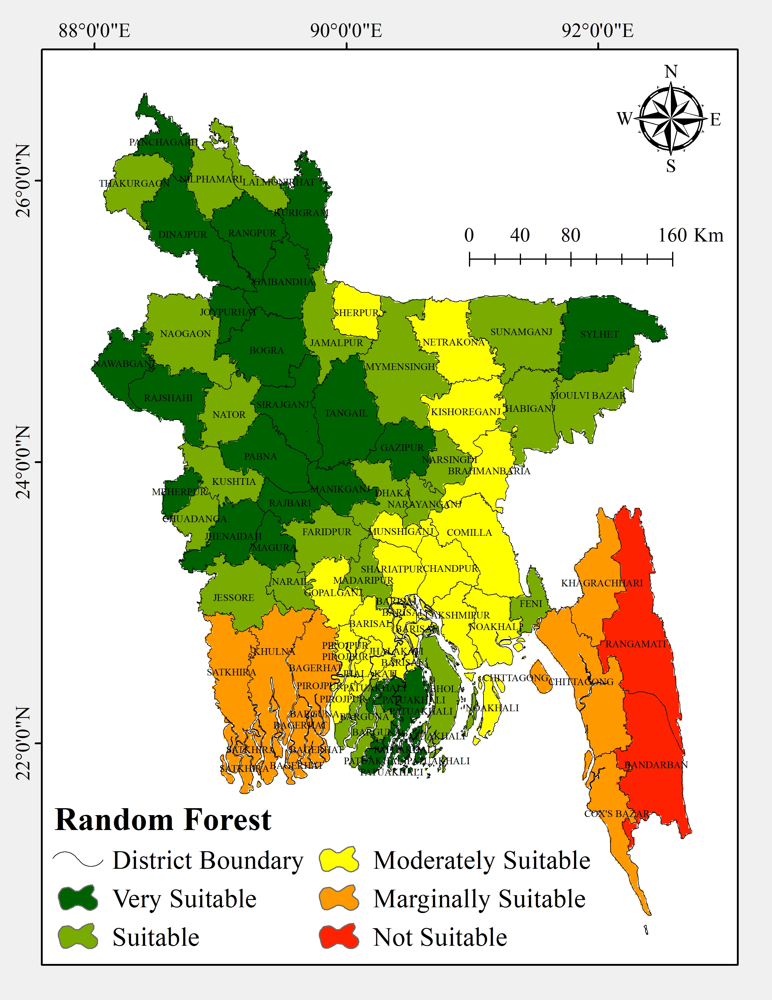
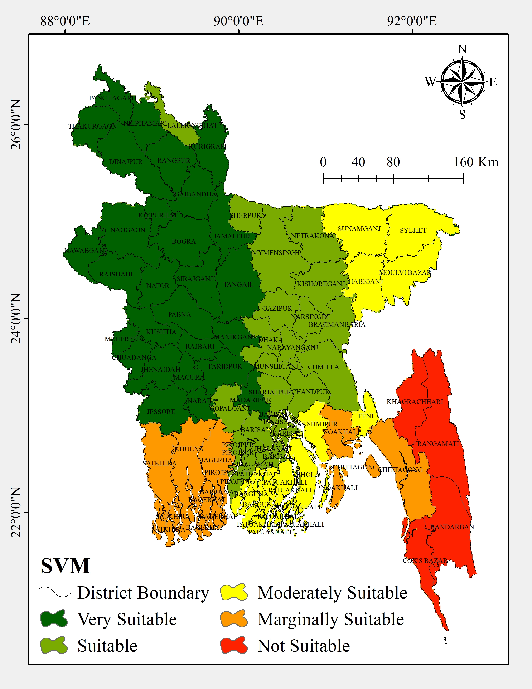

The Food Security Crisis
Bangladesh's 170+ million people depend on agriculture for 17.5% of GDP and 48.4% of employment. Climate change — unpredictable monsoons, salinity intrusion, rising temperatures — is eroding crop suitability without warning.
Peer-Reviewed Publication · Smart Agricultural Technology · Elsevier · 2025
A national-scale machine learning framework integrating 13 climatic, geospatial, geological and topographic variables — ANN, Random Forest, and SVM — to predict suitability for 8 major crops across 64 districts of Bangladesh.
01 · Why This Research Matters
Bangladesh's 170+ million people depend on agriculture for 17.5% of GDP and 48.4% of employment. Climate change — unpredictable monsoons, salinity intrusion, rising temperatures — is eroding crop suitability without warning.
Traditional agricultural planning ignores topographic and geospatial nuance. Prior studies focused on single crops or limited variables. No study had mapped multi-crop suitability at district level integrating climatic, geospatial, geological, and topographic variables simultaneously.
ANN, RF and SVM, trained on 13 environmental layers and validated with ROC-AUC, can produce district-level, crop-specific suitability maps that support precision agriculture at national scale — a first for Bangladesh.
Tangail, Naogaon and Sylhet emerged as the nation's most productive agricultural zones. Bandarban and Rangamati remained the most constrained — not by policy, but by topography and climate.
02 · Authorship
03 · Study Area & Data

study-area-map.jpg · image unavailable04 · Analytical Framework
GIS and RS architecture. 13 thematic layers compiled from BARC, Landsat, MOD16 ET, Monthly Climate Water Balance, Open Topography SRTM, and Bangladesh Agriculture Research Council. All layers harmonized to WGS 1984 UTM Zone 45.
100 georeferenced crop locations from BARC crop suitability map + 100 random non-crop control points. 200 total validation points distributed across Bangladesh's 64 districts.
MLPClassifier with 2 hidden layers (100 + 50 neurons), ReLU activation, max 5,000 iterations. 80% training / 20% testing split.
Ensemble of bootstrapped decision trees. Non-parametric, handles collinear predictors. Balanced 80% training / 20% testing partition.
RBF and linear kernels tested. 80% training / 20% testing split. Handles non-linear multi-factor interactions between climate and topographic inputs.
AUC benchmarks: 0.91–1.00 Excellent · 0.81–0.90 Very Good · 0.71–0.80 Good · 0.61–0.70 Satisfactory. Final model selected per crop on highest AUC score.

methodology-flowchart.jpg · image unavailable05 · Model Performance
| Model | Avg AUC | Best Crop | Worst Crop | Verdict |
|---|---|---|---|---|
| ANN | 0.93 | Boro (0.96) | Jute (0.85) | ✦ Best overall |
| Random Forest | 0.90 | — | — | Strong ensemble |
| SVM | 0.87 | — | — | Moderate |

roc-ann-summary.jpg · image unavailable| Aman | Aush | Boro | Jute | Lentil | Maize | Potato | Wheat |
|---|---|---|---|---|---|---|---|
| 0.94 | 0.92 | 0.96 | 0.85 | 0.91 | 0.92 | 0.87 | 0.92 |
06 · What Drives Crop Suitability?
Across all three models and all 8 crops, evapotranspiration (ET) consistently emerged as the most influential predictor — reflecting the critical role of water balance and atmospheric demand in determining crop yield across Bangladesh. Soil moisture ranked second in the ANN model; ET ranked first in RF and SVM. Soil salinity had the least overall impact across all models.
Soil moisture most influential. Groundwater quality moderate. Aspect low. ET consistently high across crops.
ET highest overall, especially for water-intensive crops (Boro, Wheat, Maize, Potato). Rainfall moderate. Soil salinity lowest.
ET and soil salinity high. Rainfall and slope moderate. DEM and soil type low influence.
Rain-fed paddy. Atmospheric demand and root-zone moisture determine yield.
Early monsoon rice. Moisture at planting is critical.
Irrigated dry-season rice. Highest ET sensitivity of all crops.
Flood-tolerant fiber crop. Topographic position controls waterlogging risk.
Dry-season pulse. Soil nutrient retention is decisive.
Water-intensive grain. Irrigation availability shapes suitability.
High-value tuber. Root-zone moisture and heat balance are critical.
Temperature and water-demand sensitive during grain-filling.

feature-importance-ann.jpg · image unavailable
feature-importance-rf.jpg · image unavailable
feature-importance-svm.jpg · image unavailable07 · National Suitability Atlas
The suitability maps produced by all three models reveal consistent spatial patterns: northern and central districts (Tangail, Naogaon, Sylhet, Dinajpur, Mymensingh) cluster as high-suitability zones. The Chittagong Hill Tracts (Rangamati, Bandarban) consistently appear as the least suitable regions due to challenging topography and climate constraints.
 ann-district-map.jpg · image unavailable
ann-district-map.jpg · image unavailable

rf-district-map.jpg · image unavailable
svm-district-map.jpg · image unavailable08 · District Rankings
| District | Very Suitable (%) | Suitable (%) | Mod. Suitable (%) | Marginally Suitable (%) | Not Suitable (%) | Grand Total (%) |
|---|
09 · Key Findings
Average ROC-AUC = 0.93 across 8 crops. Outperforms RF (0.90) and SVM (0.87). MLPClassifier with 2 hidden layers captures complex non-linear interactions between climate, soil, and topography.
ET ranked #1 in RF and SVM, and high across all ANN crop models. This highlights the critical role of water balance in Bangladesh's monsoon-dominated agricultural system.
Salinity ranked lowest across all models. But with coastal salinization accelerating under climate change, this finding serves as a baseline: future models will likely show increasing salinity impact.
Tangail, Naogaon, Sylhet, and Dinajpur consistently score highest Very Suitable classifications. These districts are Bangladesh's most reliable agricultural zones across all three models.
Rangamati (3.95% of total, lowest suitability) and Bandarban (3.19%) face topographic and climatic barriers that ML confirms as structural, not addressable by policy alone. Marginal zones need adaptation strategies, not yield targets.
No prior study integrated this breadth of climatic, geospatial, geological, and topographic variables with three ML models for 8 crops simultaneously. This is a methodological baseline for precision agriculture research in South Asia.
10 · Limitations & Future Directions
11 · Full Citation
Faisal, W., Sarkar, S. K., Huq, K. T., Noor, T. A., & Rafi, A. H. (2025). Machine learning integrated approach for modeling crop production in Bangladesh. Smart Agricultural Technology, 12, 101403.
DOI · 10.1016/j.atech.2025.101403 ↗Open Access · CC BY 4.0 · © 2025 The Authors · Published by Elsevier B.V.
12 · Tools & Stack